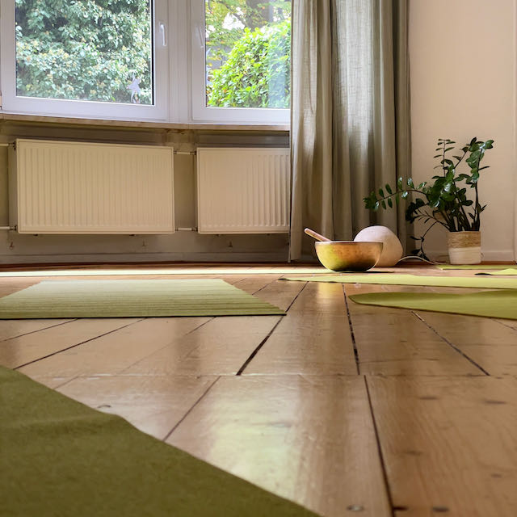
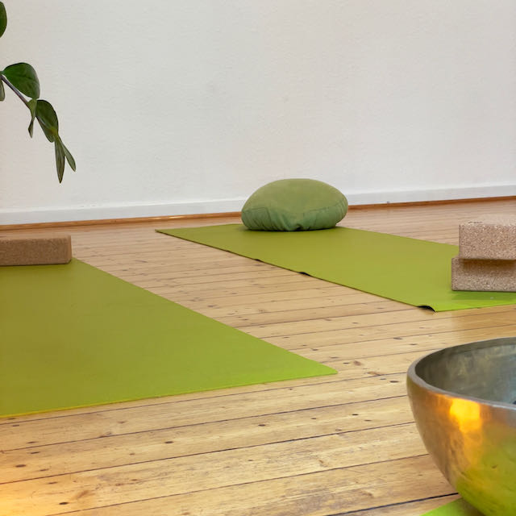
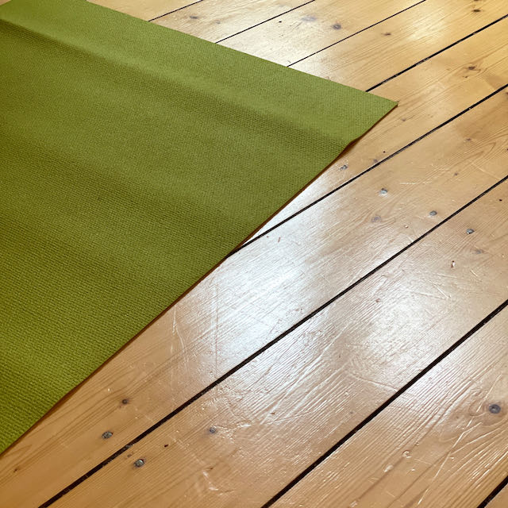
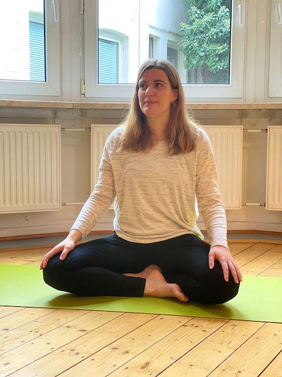

Herzlich Willkommen
Schön, dass du da bist 🙂
Hier findest du alle Angebote zu meinen Herzensthemen Frauengesundheit und mentale Gesundheit. Ich möchte mit meinem Yogakurs-Angebot einen Raum schaffen für Zyklusbewusstsein und Nervensystem-Regulation. Yoga als nährende Praxis, die eine Verbindung herstellt von Körper, Geist und Seele. Eine Praxis, bei der nicht die Leistung im Vordergrund steht, sondern nach dem Grundprinzip der Selbstfürsorge praktiziert wird. Kontaktiere mich gerne jederzeit bei Fragen/Wünschen/Anregungen, ich freue mich auf unseren Austausch.
Aktuelle Kurse
Ab Donnerstag, den 17. November 2022 unterrichte ich einen Moon Yoga® Kurs in der Physiotherapie Praxis (https://rosalieerlinger.de), Wallstraße 50 in 52064 Aachen.
Der Kurs findet in der Zeit von 19:00 - 20:15 Uhr statt. Die Probestunde kostet 10 €, danach kannst du eine 5er Karte für 75€ erwerben.
Ich freue mich auf deine Anmeldung per E-Mail an yoga@nadine-niersbach.de.
Falls du noch Fragen/Wünsche/Anregungen zu meinem Angebot hast, freue ich mich auf Deine Kontaktaufnahme.
Nächste Termine New
- 17. November 2022
- 24. November 2022
- 1. Dezember 2022
- 8. Dezember 2022
- 15. Dezember 2022
- 22. Dezember 2022
- 29. Dezember 2022 (fällt aus)



Über Mich
Wer ich bin?
Nadine, empathisch, humorvoll, wissbegierig, ruhig im Äußeren und manchmal ganz viel los im Inneren, verliebt in Yoga. Am liebsten verbringe ich meine Zeit mit meinen Lieblingsmenschen in einem netten Café, ich gehe gerne in der Natur spazieren und liebe das Element Wasser.
Mein Yogaweg
Zunächst BWLerin und verliebt in Zahlen, Excel-Tabellen und der Optimierung von Prozessen mit Software. Dann nach Zyklusbeschwerden im Jahr 2018 meine große Liebe zu Yoga entdeckt und meinem Herzen gefolgt - nachdem mich das Leben in meinem Umfeld mehrmals wachgerüttelt hat mit der Botschaft, dass UNSERE LEBENSZEIT ETWAS SEHR KOSTBARES ist.
Yoga gab mir die Möglichkeit, raus aus der Opferrolle zu treten - ein Tool in der Hand zu haben, dass mir zu Zyklusbewusstsein und zur SELBSTWIRKSAMKEIT verhilft. Selbstwirksamkeit, Ruhe und Ausgeglichenheit auch auf mentaler Ebene. Diese Wirkung ist für mich das größte Geschenk. Zwei Yoga-Ausbildungen später schreibe ich nun diesen Text, mit dem Wunsch mein Wissen weiterzugeben, weiterzulernen und einen Raum zu schaffen für meine Herzensthemen Frauengesundheit und mentale Gesundheit.
Ausbildungen:
- Yin Yoga Ausbildung, Mirka Carlsen und Johanna Langner, 2022
- Moon Yoga® Ausbildung, Andrea Kampermann, 2022
- Fortbildung Traumasensibel begleiten (Schwerpunkte Nervensystem und Selbstregulationstechniken), Natalie Bürk, 2022
Seminare:
- Hormon Yoga Therapie für Frauen (Workshop nach der Übungsreihe von Dinah Rodriguez), Sound &Yoga, 2020
- Ayurveda für Frauen, Natalie Bürk, 2022
- Atemkurs, Julia Schwarz, 2022

Moon Yoga®
Was ist Moon Yoga®?
Moon Yoga® ist ein Yogastil, der von Andrea Kampermann speziell für die Bedürfnisse von Frauen entwickelt wurde. Bei dieser Praxis werden Übungen aus dem fließenden Vinyasa Yoga, dem funktionalen Faszien Yoga, dem ruhigen Yin Yoga, dem Fertility &Hormon Yoga und dem ausgleichenden Restorative Yoga kombiniert.
Es gibt spezielle Übungen, die den Hormonstatus ausgleichen, die Fruchtbarkeit steigern, gezielt Verklebungen im Gewebe lösen, die Entgiftung des Körpers fördern und das Immunsystem stärken.
Mit dieser Yogapraxis legen wir den Fokus auf den „Yin“ Teil von uns, also den Anteil, der für Weiblichkeit, Passivität, Loslassen, Intuition und den Mond (daher Moon Yoga®) steht.
Moon Yoga® berücksichtigt die weibliche Anatomie, den weiblichen Zyklus und seine vier Phasen, eine eventuell vorhandene Frühschwangerschaft, mögliche Beschwerden, Schmerzen und Erkrankungen im Unterleib und kann bei Kinderwunsch unterstützend wirken.
Die Praxis wirkt, auch wenn keine hormonellen Herausforderungen vorliegen, ausgleichend auf das Nervensystem und stärkt die Verbindung zu den weiblichen Qualitäten wie Sanftheit und femininer Stärke.
Was erwartet dich bei einer Moon Yoga® Stunde?
Wir fließen durch sanfte, nährende, hormonell ausgleichende Yoga-Haltungen, praktizieren z.B. Elemente des Mondgrußes bevor wir im zweiten Teil der Stunde länger in den Yin Yoga Positionen verweilen, um gezielt das fasziale Gewebe zu erreichen. Bestandteil der Stunde sind ebenso Atemübungen und Visualisierungen, die unser Nervensystem beruhigen und mit denen wir die Verbindung mit unseren weiblichen Qualitäten stärken.
Für wen ist Moon Yoga® geeignet?
- Für Frauen allen Alters
- Für Frauen mit und ohne weibliche Geschlechtsorgane
- Für Frauen mit hormonellem Ungleichgewicht, Endometriose, PCOS, Myomen, Polypen, Zysten und starkem PMS*
- Für Frauen, die sich Unterstützung während der Kinderwunschbehandlung wünschen*
- Für Yoginis mit und ohne Vorerfahrung
*Mein Angebot dient der Selbstfürsorge und stellt keine medizinische Behandlung dar, bitte halte im Zweifelsfall vor der Teilnahme an der Yogapraxis Rücksprache mit deinem behandelnden Arzt oder Therapeuten.
Du möchtest gerne mal an einer Moon Yoga®-Stunde teilnehmen? Dann schau gerne unter Aktuelle Kurse vorbei. Ich freue mich darauf, Dich persönlich kennenzulernen.